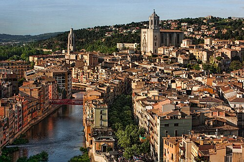

Escapadas en Asturias desde Barcelona
Hoteles, casas rurales y escapadas en Asturias, ordenados por el coste del viaje completo para 2 personas desde Barcelona: la oferta y, si se va en coche, la gasolina estimada (sin peajes). Las que no permiten calcularlo van al final, por precio.
Abrir en el panel (con mapa, filtros y comparación)
Las 17 ofertas
-

Foto: BuscoUnChollo Descubre Asturias en hotel 4* al mejor precio
El Berrón, Asturias · Fechas flexibles · 9 h 31 min en coche
Viaje completo: ≈ 108 € por persona (216 € para 2 personas, 1 noche) · Precio en BuscoUnChollo: desde 25 € por persona
Ver oferta en BuscoUnChollo (se abre en otra pestaña)
Precio visto en BuscoUnChollo el sáb 28 nov. El precio final lo confirma su web.
-

Foto: Viajeros Piratas Escapada 4* con spa en Asturias
Asturias · Fechas flexibles · 9 h 58 min en coche
Viaje completo: ≈ 112 € por persona (224 € para 2 personas) · Precio en Viajeros Piratas: desde 27 € por persona
Ver oferta en Viajeros Piratas (se abre en otra pestaña)
Precio visto en Viajeros Piratas el sáb 28 nov. El precio final lo confirma su web.
-

Foto: BuscoUnChollo Descubre una verdadera villa marinera en Asturias
Candás, Asturias · Fechas flexibles · 9 h 44 min en coche
Viaje completo: ≈ 113 € por persona (226 € para 2 personas, 1 noche) · Precio en BuscoUnChollo: desde 29 € por persona
Ver oferta en BuscoUnChollo (se abre en otra pestaña)
Precio visto en BuscoUnChollo el sáb 28 nov. El precio final lo confirma su web.
-

Foto: Chollometro Descubre una verdadera villa marinera en Asturias (Candás) hotel 4*+desayuno -50% niños (nov-ene)(precio por persona, mínimo 2 personas)
Asturias · Fechas flexibles · 9 h 58 min en coche
Viaje completo: ≈ 114 € por persona (228 € para 2 personas) · Precio en Chollometro: desde 29 € por persona
Ver oferta en Chollometro (se abre en otra pestaña)
Precio visto en Chollometro el sáb 28 nov. El precio final lo confirma su web.
-

Foto: BuscoUnChollo ¡Asturias te está esperando! Alójate en un 4* con Spa incluido
Benia de Onís, Asturias · Fechas flexibles · 8 h 59 min en coche
Viaje completo: ≈ 122 € por persona (245 € para 2 personas, 1 noche) · Precio en BuscoUnChollo: desde 45 € por persona
Ver oferta en BuscoUnChollo (se abre en otra pestaña)
Precio visto en BuscoUnChollo el sáb 28 nov. El precio final lo confirma su web.
-

Foto: Chollometro ¡Un capricho en Asturias! Hotel 4*+desayuno frente al Cantábrico (Nov-dic)
Asturias · Fechas flexibles · 9 h 58 min en coche
Viaje completo: ≈ 129 € por persona (258 € para 2 personas, 1 noche) · Precio en Chollometro: desde 44 € por persona
Ver oferta en Chollometro (se abre en otra pestaña)
Precio visto en Chollometro el sáb 28 nov. El precio final lo confirma su web.
-

Foto: Atrápalo Escapada con cena y vino en Cangas de Onís, puerta de los Picos de Europa
Cangas de Onís, Asturias · Fechas flexibles · 9 h 16 min en coche
Viaje completo: ≈ 134 € por persona (268 € para 2 personas) · Precio en Atrápalo: desde 54 € por persona
Ver oferta en Atrápalo (se abre en otra pestaña)
Precio visto en Atrápalo el sáb 28 nov. El precio final lo confirma su web.
-

Foto: Atrápalo Duerme en un monasterio milenario junto a los Picos de Europa
Cangas de Onís, Asturias · Fechas flexibles · 9 h 16 min en coche
Viaje completo: ≈ 140 € por persona (280 € para 2 personas) · Precio en Atrápalo: desde 60 € por persona
Ver oferta en Atrápalo (se abre en otra pestaña)
Precio visto en Atrápalo el sáb 28 nov. El precio final lo confirma su web.
-

Foto de ejemplo (Serra Cabirolera, Cadí-Moixeró): Vicens · CC BY 3.0 ¡Escapada rural a la Asturias salvaje!
Asturias · vie 29 ene – dom 31 ene · 9 h 58 min en coche
Viaje completo: ≈ 143 € por persona (287 € para 2 personas, 2 noches) · Precio en Escapada Barata: 117 € en total
Ver oferta en Escapada Barata (se abre en otra pestaña)
Precio visto en Escapada Barata el vie 27 nov. El precio final lo confirma su web.
-
Foto: Muchoviaje Hotel La Pasera en Cangas de Onis
Cangas de Onis, Asturias · Fechas flexibles · 9 h 11 min en coche · Nota 7,4
Viaje completo: ≈ 144 € por persona (289 € para 2 personas, 2 noches) · Precio en Muchoviaje: desde 65 € por alojamiento y noche
Ver oferta en Muchoviaje (se abre en otra pestaña)
Precio visto en Muchoviaje el sáb 28 nov. El precio final lo confirma su web.
-

Foto: Atrápalo Escapada termal con spa en el URH Zen Balagares en Asturias
Corvera, Asturias · Fechas flexibles · 9 h 54 min en coche
Viaje completo: ≈ 150 € por persona (301 € para 2 personas) · Precio en Atrápalo: desde 65 € por persona
Ver oferta en Atrápalo (se abre en otra pestaña)
Precio visto en Atrápalo el sáb 28 nov. El precio final lo confirma su web.
-

Foto: BuscoUnChollo Escapada wellness en Asturias: ¡hotel 4* con circuito termal incluido!
Overo, Asturias · vie 1 ene – vie 15 ene · 9 h 48 min en coche
Viaje completo: ≈ 170 € por persona (340 € para 2 personas, 2 noches) · Precio en BuscoUnChollo: 85 € por persona
Ver oferta en BuscoUnChollo (se abre en otra pestaña)
Precio visto en BuscoUnChollo el sáb 28 nov. El precio final lo confirma su web.
-
Foto: Holidayguru Navidad y Festival de las Luces en Ámsterdam
Luces, Asturias · Fechas flexibles · En avión
Viaje completo: 270 € por persona (540 € para 2 personas, 4 noches) · Precio en Holidayguru: desde 270 € por persona
Ver oferta en Holidayguru (se abre en otra pestaña)
Precio visto en Holidayguru el sáb 28 nov. El precio final lo confirma su web.
-

Foto: Viajeros Piratas Hotel 4* en Colmar para los Mercados de Navidad
Colmar, Asturias · Fechas flexibles · 8 h 31 min en coche
Viaje completo: ≈ 309 € por persona (617 € para 2 personas, 2 noches) · Precio en Viajeros Piratas: desde 117 € por persona y noche
Ver oferta en Viajeros Piratas (se abre en otra pestaña)
Precio visto en Viajeros Piratas el sáb 28 nov. El precio final lo confirma su web.
-

Foto: Chollometro Abrígate y pon rumbo a Gijón: hotel 3*+desayuno (Nov-dic)
Gijón, Asturias · Fechas flexibles · 9 h 32 min en coche
desde 29 € (sin unidad) (precio en Chollometro; sin datos para calcular el viaje completo)
Ver oferta en Chollometro (se abre en otra pestaña)
Precio visto en Chollometro el sáb 28 nov. El precio final lo confirma su web.
-

Foto de ejemplo (Girona): Patronat de Turisme Costa Brava Pirineu de Girona · CC BY-SA 3.0 Girona 4★: Hotel con desayuno + Free Tour Girona y Juego de tronos hasta febrero 2027 (¡Disponible en Puentes y Navidad!)
Puentes, Asturias · Fechas flexibles · 9 h 27 min en coche
desde 56 € (sin unidad) (precio en Chollometro; sin datos para calcular el viaje completo)
Ver oferta en Chollometro (se abre en otra pestaña)
Precio visto en Chollometro el sáb 28 nov. El precio final lo confirma su web.
-

Foto de Gijón: FDV · CC BY-SA 3.0 Escápate a Gijón y date el gusto en un hotel 4*con desayuno y circuito spa (Nov-dic)
Gijón, Asturias · Fechas flexibles · 9 h 32 min en coche
desde 58 € (sin unidad) (precio en Chollometro; sin datos para calcular el viaje completo)
Ver oferta en Chollometro (se abre en otra pestaña)
Precio visto en Chollometro el sáb 28 nov. El precio final lo confirma su web.
:quality(65)/s3/hotel/4b06fdc2-bfdf-49a1-8359-c5dd6b5a3abb)
Cómo se ha hecho esta lista
17 ofertas vigentes cumplen; aquí van las 17 primeras. Datos del sáb 28 nov; los precios son los que publica cada web y pueden haber cambiado. Confirma siempre en la web del proveedor.
Cómo se compara: el viaje completo por persona para 2 personas, con 2 noches cuando la oferta se cobra por noche, y la gasolina de ida y vuelta si se va en coche (estimada, sin peajes ni aparcamiento). No incluye comidas ni actividades que la oferta no incluya. Junto a cada uno, el precio tal como lo publica su web. Solo ofertas con alojamiento que su web ha mostrado recientemente: las caducadas y las que su web ha dejado de mostrar no salen.